Iván Alonso
Estudiante de Ingeniería en Animación y Videojuegos apasionado por el diseño de juegos y la creación de entornos visuales.


Sobre mí
¡Hola! Soy un estudiante de Ingeniería en Animación y Videojuegos con una gran pasión por el desarrollo de videojuegos, el diseño de niveles y la dirección artística. Me especializo en la creación de experiencias interactivas que combinan mecánicas innovadoras con narrativas visuales impactantes. Disfruto explorar nuevas formas de contar historias a través del diseño de entornos inmersivos, la estética visual y la jugabilidad dinámica.
Me interesa el desarrollo técnico y creativo en la industria, desde la conceptualización de ideas hasta su implementación en motores de juego. Siempre estoy buscando mejorar mis habilidades y experimentar con nuevas tecnologías y estilos artísticos para llevar cada proyecto al siguiente nivel.
Mis Proyectos
Cafetería de los 60's
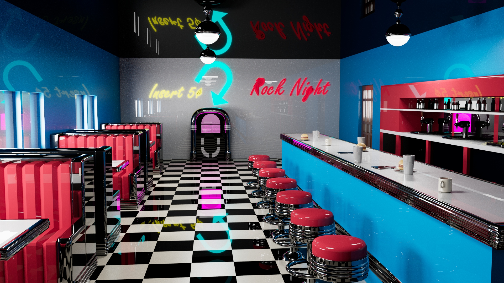 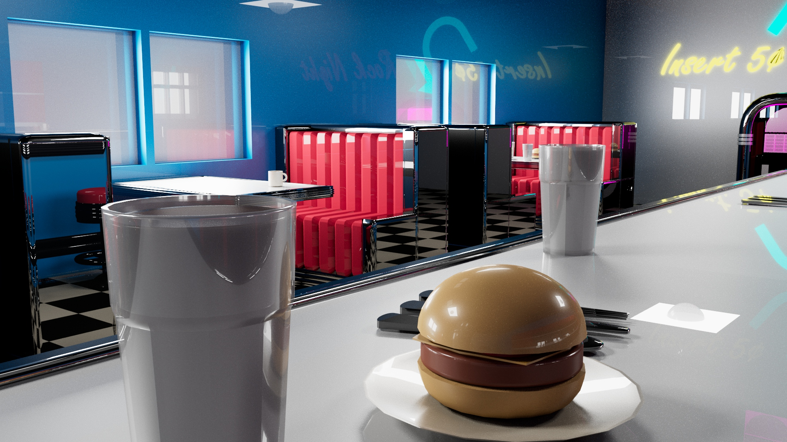 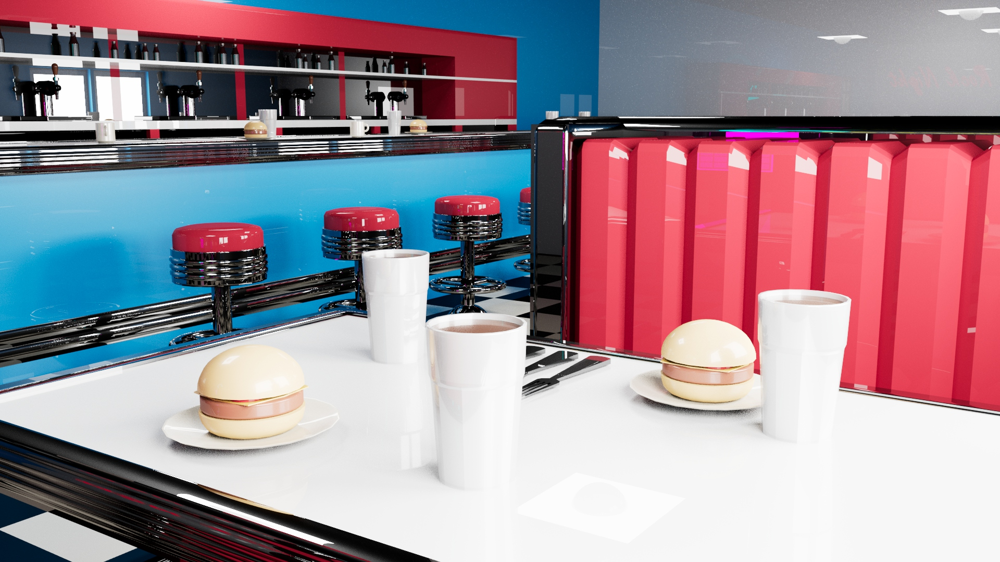Recreación hecha en solitario, de una cafetería estilo años 60 con detalles icónicos como pisos de cuadros, asientos diner y una jukebox, enfocada en realismo y ambientación nostálgica.
Software utilizado:
Diorama
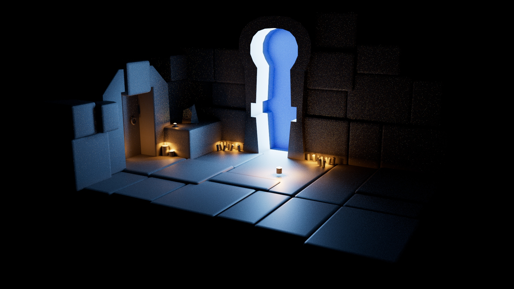 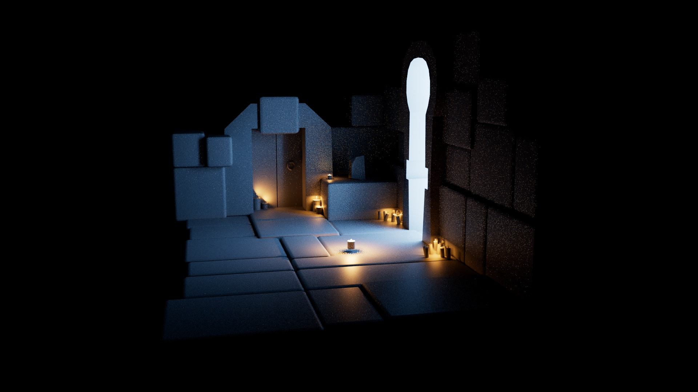 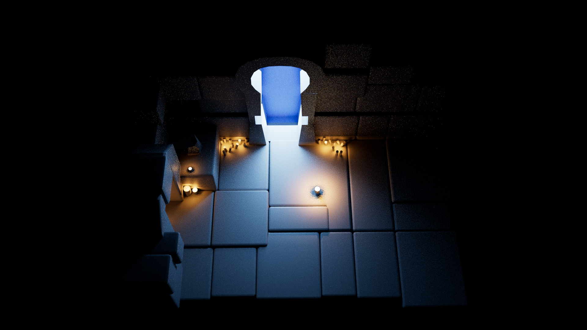Pequeña escena en 3D hecha en solitario, con una atmósfera etérea, combinando luces suaves para evocar un mundo de misterio y fantasía.
Software utilizado:
Laboratorio
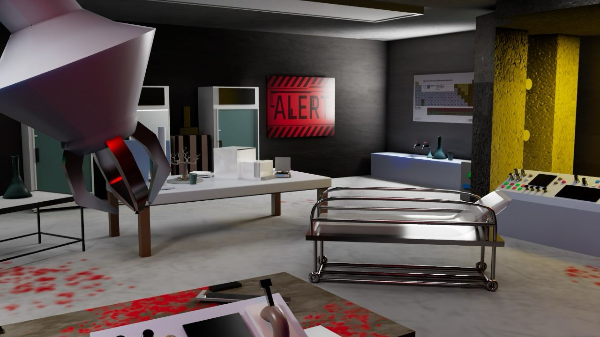 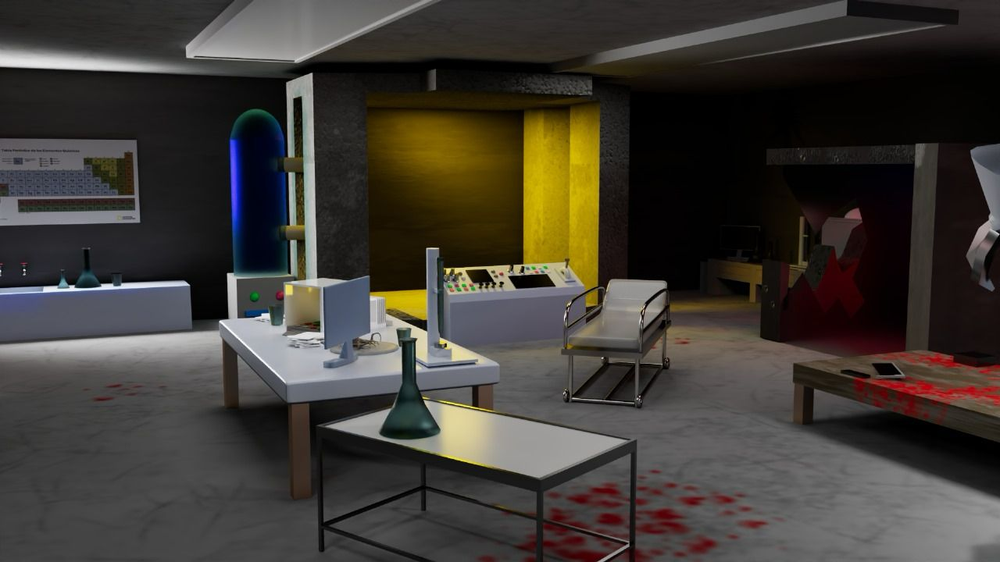 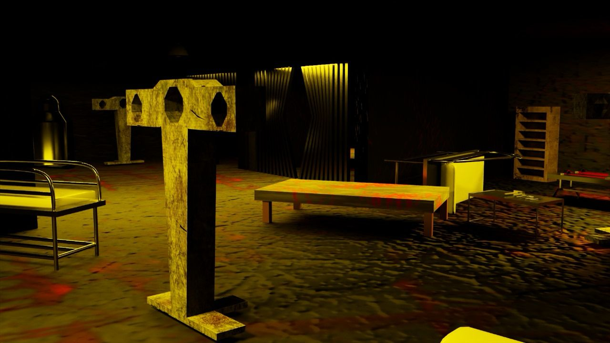 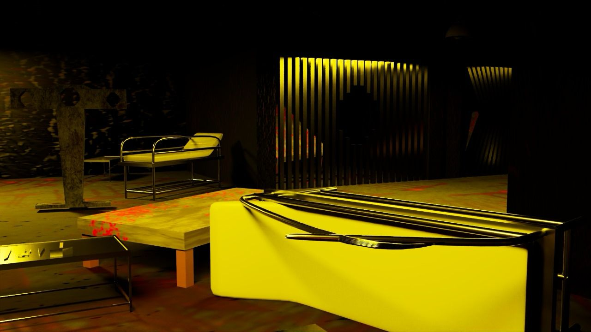 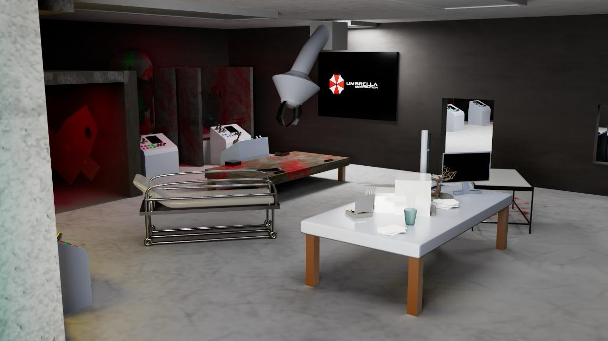 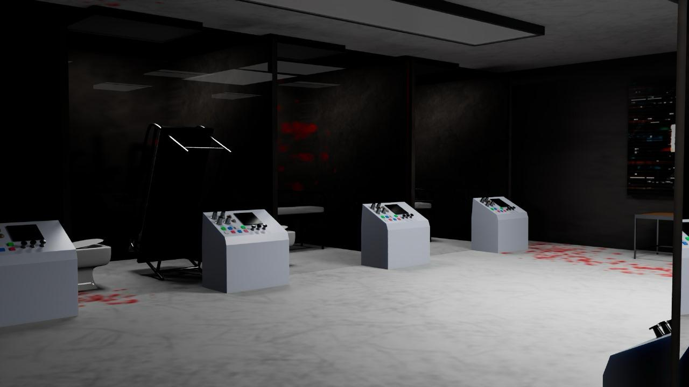Escena elaborada en conjunto con mi compañero Uriel Valdez Oloarte, hecha en 3D de un laboratorio en ruinas, con luces parpadeantes, líquidos derramados y equipos rotos, creando una atmósfera de suspenso y horror.
Software utilizado:
Pueblo Medieval
Modelado y diseño de un pueblo medieval en 3D hecho en conjunto con mi compañero Uriel Valdez Oloarte, optimizado como un mapa jugable en Unreal Engine. Se integraron detalles arquitectónicos e iluminación ambiental para una experiencia inmersiva.
Software utilizado:
Contacto
Email: elhombreverde18@hotmail.com
Teléfono: +52 (55) 1147-6423